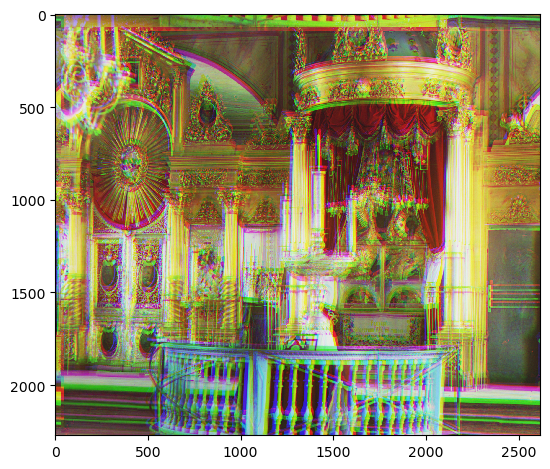
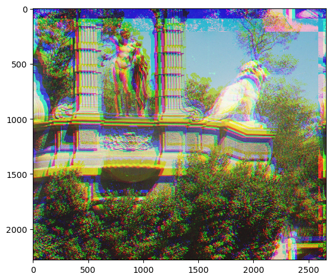

cathedral.jpg Green: (5, 2)
Red: (12, 3)

monastery.jpg Green: (-3, 2)
Red: (3, 2)

tobolsk.jpg Green: (3, 3)
Red: (6, 3)
The goal of this assignment is to take the digitized Prokudin-Gorskii glass plate images and, using image processing techniques, automatically produce a color image with as few visual artifacts as possible. Thus, I extracted the three color channel images, placed them on top of each other and aligned them so that they form a single RGB color image.
First, I processed and prepared the .jpg image by splitting it into three equal sections, cropping the outer 15% of the image to remove the dark or black borders and yield a more accurate alignment. I then aligned the images by exhaustively searching over the interval [-15, 15] and finding the best alignment based on Normal Cross-Correlation (NCC). A higher NCC meant a better alignment. Finally, I returned the image with the best alignment, or highest NCC.
cathedral.jpg Green: (5, 2) Red: (12, 3) |
monastery.jpg Green: (-3, 2) Red: (3, 2) |
tobolsk.jpg Green: (3, 3) Red: (6, 3) |
In order to process larger .tif images, I used image pyramids. I processed every image using the same method as I did in the single-scale alignment. Then, I rescaled the image by 0.5 , halving its size for 2 iterations. This means that the pyramid has 2 levels of 0.5 and 0.25 of the original image. I aligned the images starting from the coarsest level (level 2 , 0.25 of the original image), adding each level's displacement multiplied by 2^level to d = (dx, dy) , initialized to (0, 0) . Finally, I used d as the displacement to align the original .tif image and returned it.

church.tif Green: (48, 8) Red: (86, -8) |

emir.tif Green: (78, 44) Red: (58, 40) |

harvesters.tif Green: (90, 34) Red: (90, 14) |

icon.tif Green: (70, 34) Red: (90, 46) |

lady.tif Green: (82, 16) Red: (90, -6) |

melons.tif Green: (90, 4) Red: (90, 4) |

onion_church.tif Green: (82, 56) Red: (90, 66) |

sculpture.tif Green: (94, -30) Red: (210, -78) |

self_portrait.tif Green: (170, 80) Red: (210, 144) |

three_generations.tif Green: (130, 42) Red: (202, 30) |

train.tif Green: (114, 18) Red: (178, 94) |
cathedral.jpg Green: (5, 2) Red: (12, 3) |
monastery.jpg Green: (-3, 2) Red: (3, 2) |
cathedral.jpg Green: (5, 2) Red: (12, 3) |
monastery.jpg Green: (-3, 2) Red: (3, 2) |
cathedral.jpg Green: (5, 2) Red: (12, 3) |
monastery.jpg Green: (-3, 2) Red: (3, 2) |
cathedral.jpg Green: (5, 2) Red: (12, 3) |
monastery.jpg Green: (-3, 2) Red: (3, 2) |